Charades · Animals · page 8/13 · all packs
Reject an image by adding its slug to public/charades/charades-animals/reject.txt (append ! to keep it word-only), then re-run node scripts/genimages.mjs.
1 2 3 4 5 6 7 8 9 10 11 12 13 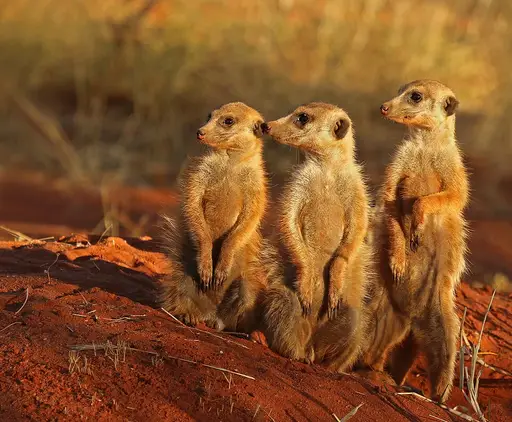
Meerkat meerkatCC BY-SA 4.0 · Charles J. Sharp · source 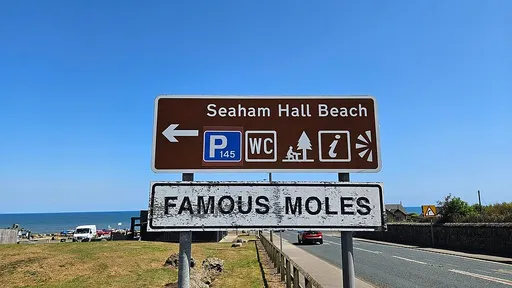
Mole moleCC0 · Beefy SAFC · source 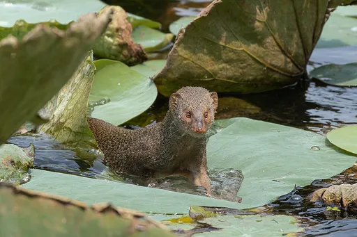
Mongoose mongooseCC BY-SA 4.0 · Tisha Mukherjee · source 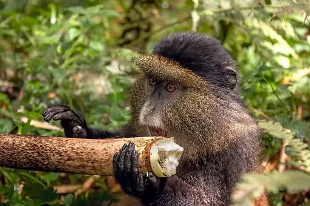
Monkey monkeyCC BY-SA 4.0 · Charles J. Sharp · source Moose mooseCC BY 2.0 · Brandon Oliver · source 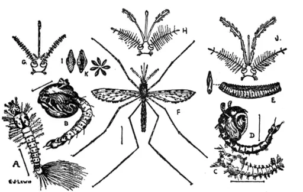
Mosquito mosquitoPublic domain · E. J. Lewis · source 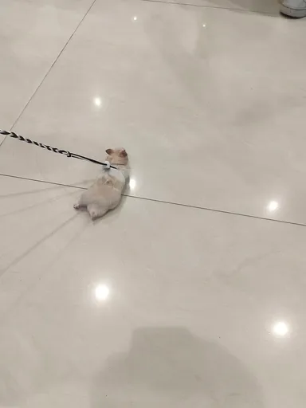
Mouse mouseCC0 · Jjsjsjshhs · source 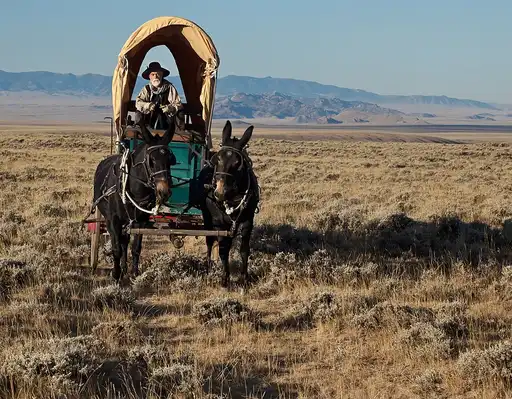
Mule mulePublic domain · Bureau of Land Management · source 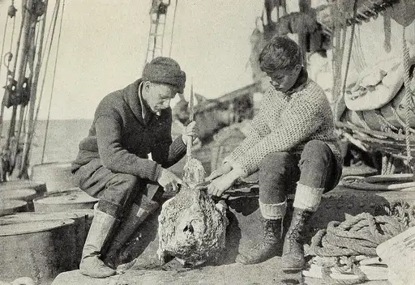
Narwhal narwhalPublic domain · Unknown photographer · source 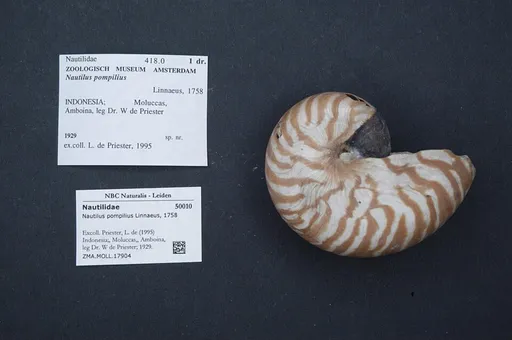
Nautilus nautilusCC0 · Linnaeus, 1758 · source 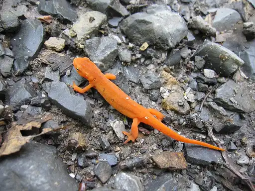
Newt newtCC BY 2.0 · Chris M · source 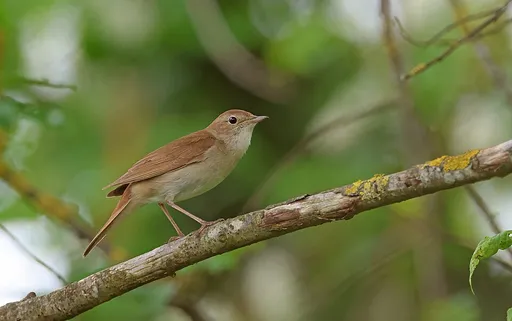
Nightingale nightingaleCC BY 4.0 · Christoph Moning · source 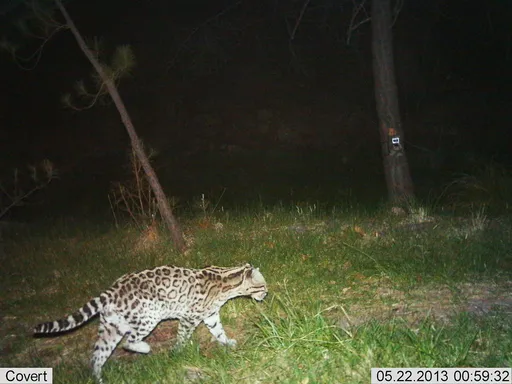
Ocelot ocelotPublic Domain Mark · U.S. Fish & Wildlife Service Southwest Region · source 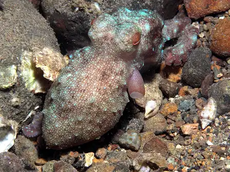
Octopus octopusCC BY-SA 2.0 · Rickard Zerpe · source 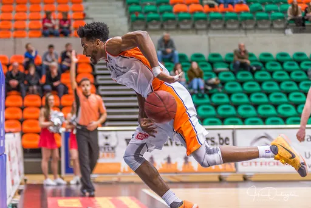
Okapi okapiPublic Domain Mark · joke devliegher · source 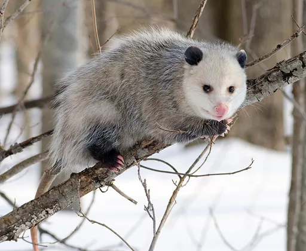
Opossum opossumCC BY-SA 2.5 · Cody Pope · source 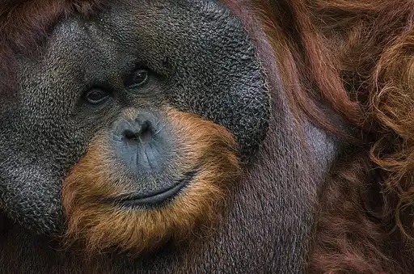
Orangutan orangutanCC BY-SA 4.0 · Ridwan0810 · source 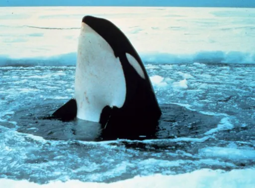
Orca orcaPublic domain · unknown · source 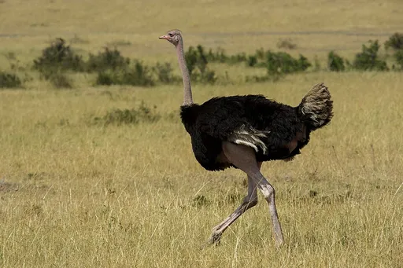
Ostrich ostrichCC BY-SA 4.0 · Thomas Fuhrmann · source 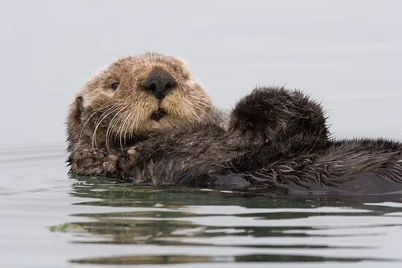
Otter otterCC BY 2.0 · Mike Baird from Morro Bay, USA (bairdphotos.com) · source 1 2 3 4 5 6 7 8 9 10 11 12 13